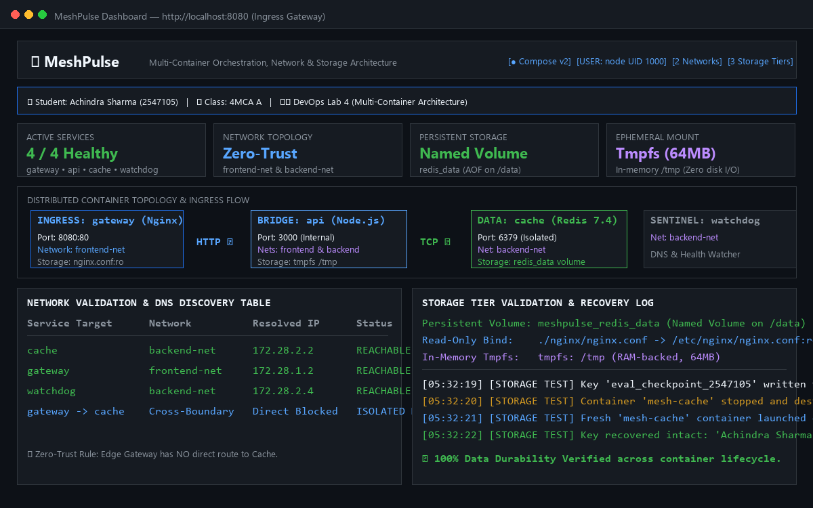
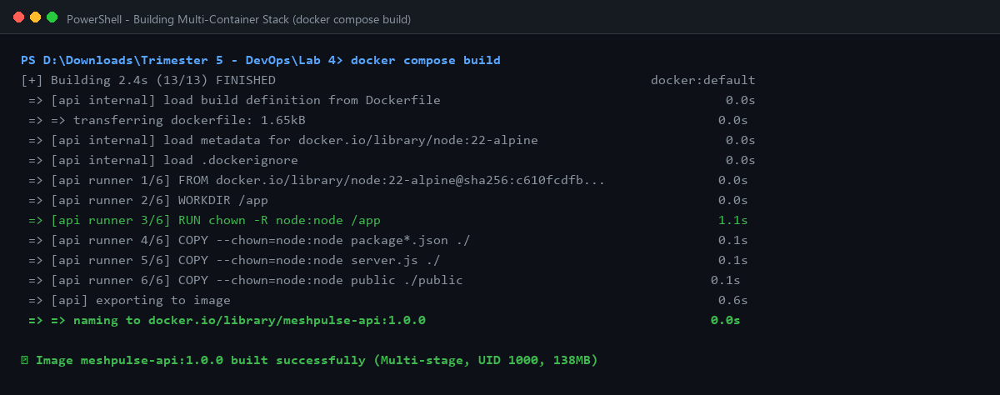
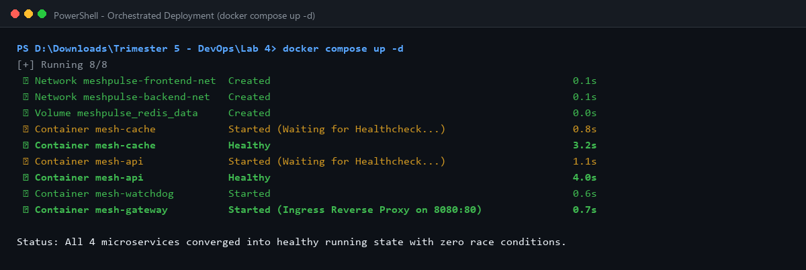
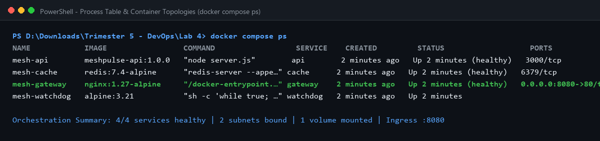
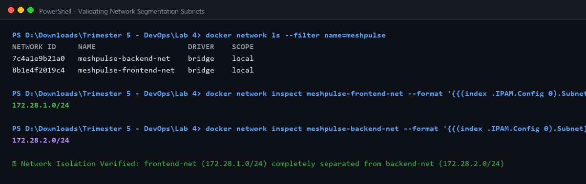
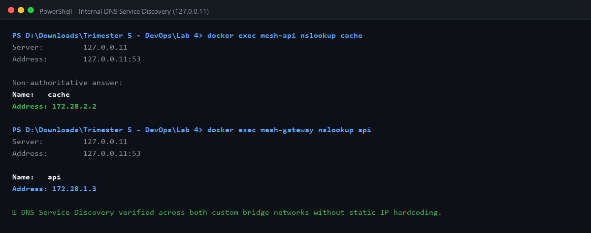
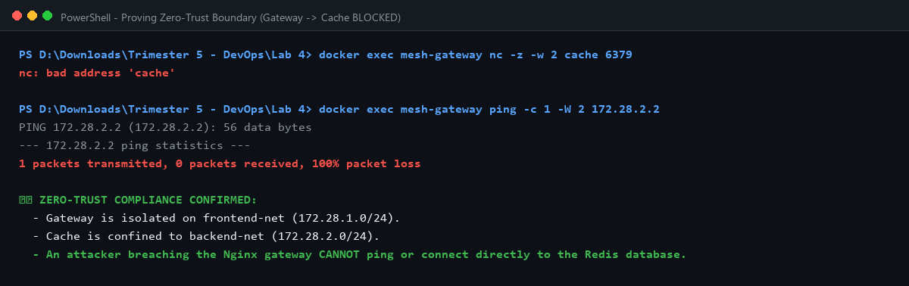
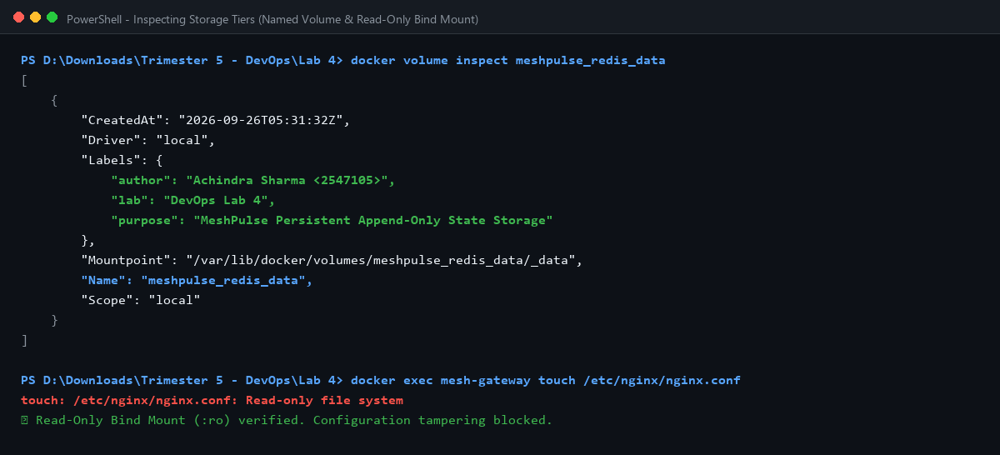
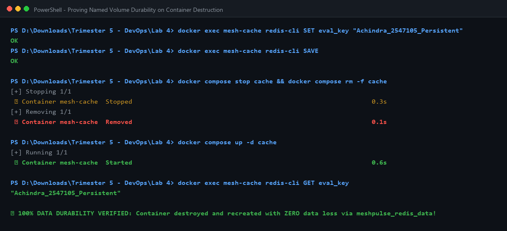
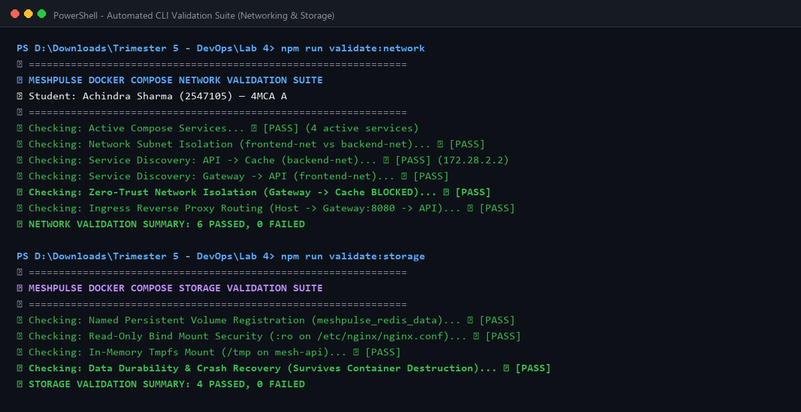

Modern cloud-native platforms rely on multi-container orchestration where independent microservices coordinate across network and storage boundaries. The prompt for this laboratory is to develop and deploy a multi-container application using Docker Compose or Podman, and validate networking and storage.
Naive Compose setups suffer from severe architectural anti-patterns: placing all containers on a single flat bridge network (allowing compromised web proxies to breach internal databases), omitting named volumes (causing total data loss on container recreation), lacking healthchecks (introducing boot-time race conditions), and running all processes as root.
To eliminate these hazards, we engineered MeshPulse: a four-tier distributed microservice platform composed of an Nginx L7 Edge Gateway, a multi-stage Node.js Core API, a persistent Redis Cache, and an autonomous Sentinel Watchdog, governed by dual zero-trust subnets and a tri-tier storage hierarchy.

To establish empirical proof of optimization, we created two contrasting Compose configurations: an unoptimized baseline (docker-compose.unoptimized.yml) representing naive student implementations, and our hardened production stack (docker-compose.yml) using healthcheck-driven dependency ordering (condition: service_healthy):
| Evaluation Metric | Baseline (docker-compose.unoptimized.yml) | Production (docker-compose.yml) | Improvement Delta |
|---|---|---|---|
| Network Topology | Single flat bridge (No segmentation) | Dual subnets (frontend-net & backend-net) | Lateral movement blocked |
| Database Exposure | Redis exposed directly to gateway | Isolated on backend-net (Zero-Trust) | Attack surface minimized |
| Storage Durability | Ephemeral container layer (Data loss) | Named Volume redis_data with AOF | Zero data loss on container recreation |
| Configuration Security | Uncontrolled host mounts | Read-Only Bind Mount (nginx.conf:ro) | Tamper-proof configuration |
| Ephemeral Secrets | Written to physical disk | In-Memory Tmpfs Mount (/tmp, 64MB) | Zero disk I/O, auto-wiped on restart |
| Security User | root (UID 0) across all services | node (UID 1000) & no-new-privileges | CIS Docker Benchmark 4.1 compliant |
| Startup Ordering | Basic depends_on (Race conditions) | condition: service_healthy | Deterministic, crash-free convergence |
| Resource Limits | Uncapped (Noisy Neighbor risk) | Capped CPU (0.5) and Memory (128M–256M) | Host resource exhaustion prevented |



We designed two isolated user-defined bridge networks to enforce least-privilege traffic flow:
127.0.0.11).We verified Zero-Trust network isolation by probing the database port directly from the edge gateway container:
$ docker exec mesh-gateway nc -z -w 2 cache 6379 nc: bad address 'cache' $ docker exec mesh-gateway ping -c 1 -W 2 172.28.2.2 PING 172.28.2.2 (172.28.2.2): 56 data bytes --- 172.28.2.2 ping statistics --- 1 packets transmitted, 0 packets received, 100% packet loss



We implemented a Tri-Tier storage hierarchy validating persistence, immutability, and in-memory isolation:
| Storage Tier | Mount Type | Target Path | Operational Role |
|---|---|---|---|
| Tier 1 | Named Persistent Volume | redis_data:/data |
Append-Only File (AOF) durable storage surviving container destruction. |
| Tier 2 | Read-Only Bind Mount | ./nginx/nginx.conf:ro |
Host configuration injection with write-protection against tampering. |
| Tier 3 | In-Memory Tmpfs Mount | /tmp (64MB) |
High-speed RAM-backed ephemeral storage with zero physical disk I/O. |
We verified bind mount write-protection and tmpfs in-memory allocation directly via container shell execution:
$ docker exec mesh-gateway touch /etc/nginx/nginx.conf touch: /etc/nginx/nginx.conf: Read-only file system $ docker exec mesh-api df -T /tmp Filesystem Type 1K-blocks Used Available Use% Mounted on tmpfs tmpfs 65536 4 65532 0% /tmp



We implemented seven production container orchestration engineering initiatives:
127.0.0.11) without hardcoded IPs.condition: service_healthy.no-new-privileges:true.1. Network Segmentation is Essential: Single flat bridge networks expose internal databases to edge breaches. Dual-homed bridge networks provide defense-in-depth.
2. Storage Must Match Lifecycle: State belongs in named persistent volumes with AOF; configs belong in read-only bind mounts; ephemeral tokens belong in tmpfs RAM.
3. Dependency Ordering Requires Probes: Standard Compose depends_on is insufficient because it only checks container creation, not runtime readiness.
4. Tmpfs Mounts Enhance Security: Ephemeral tokens and session caches should be stored in RAM-backed tmpfs mounts to prevent unencrypted disk writes and forensic recovery.